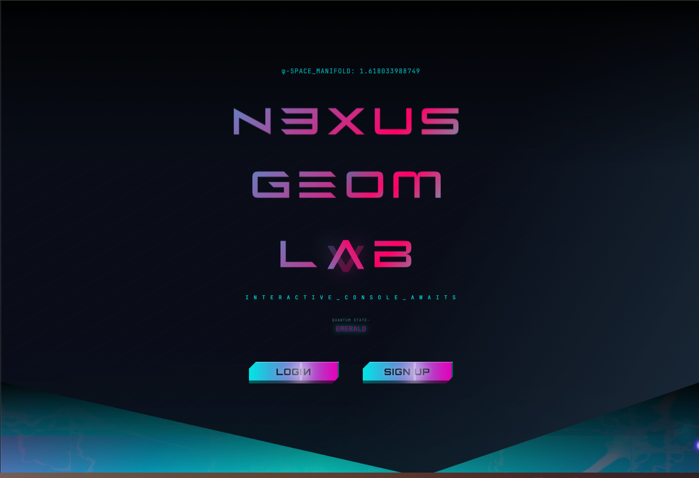
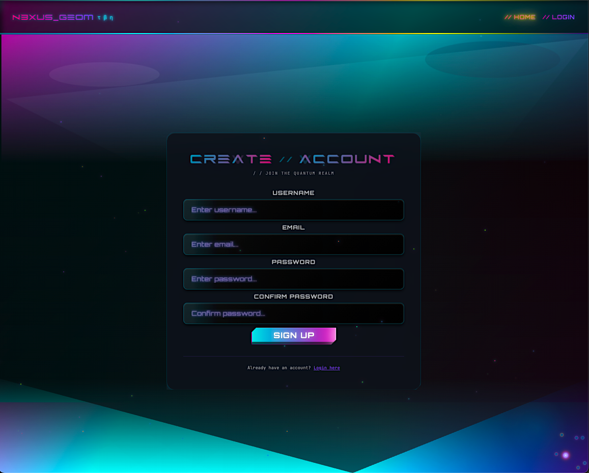
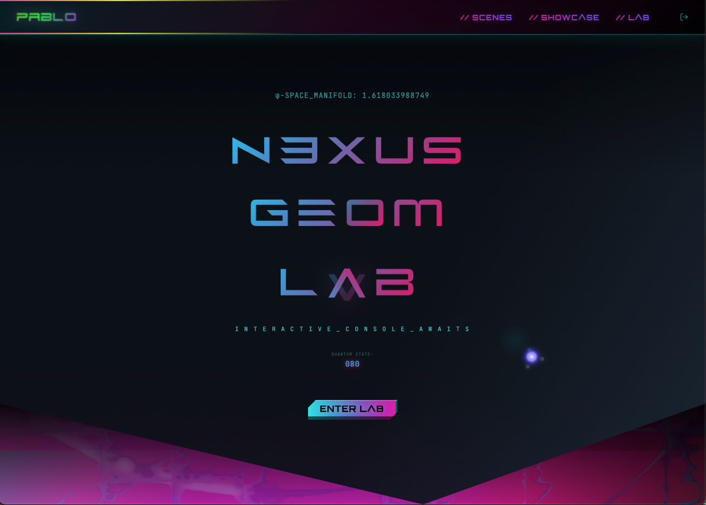
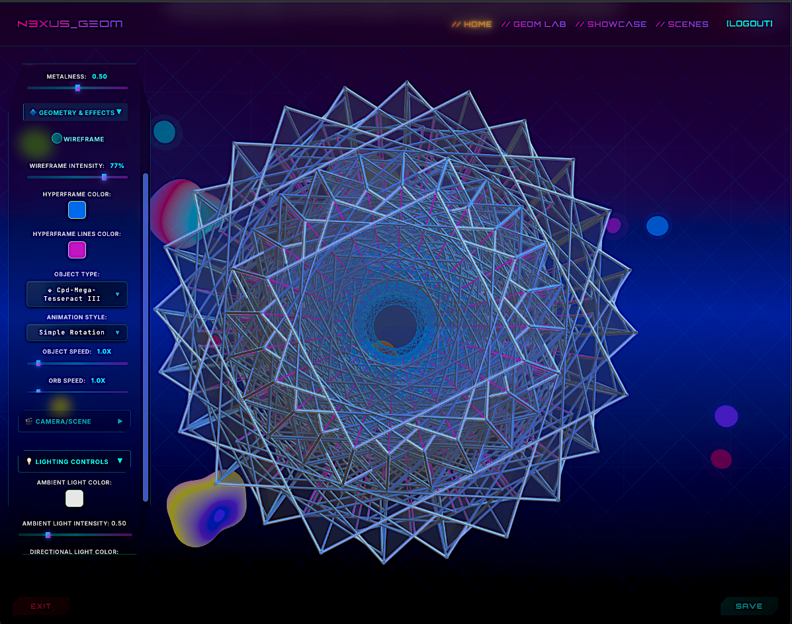
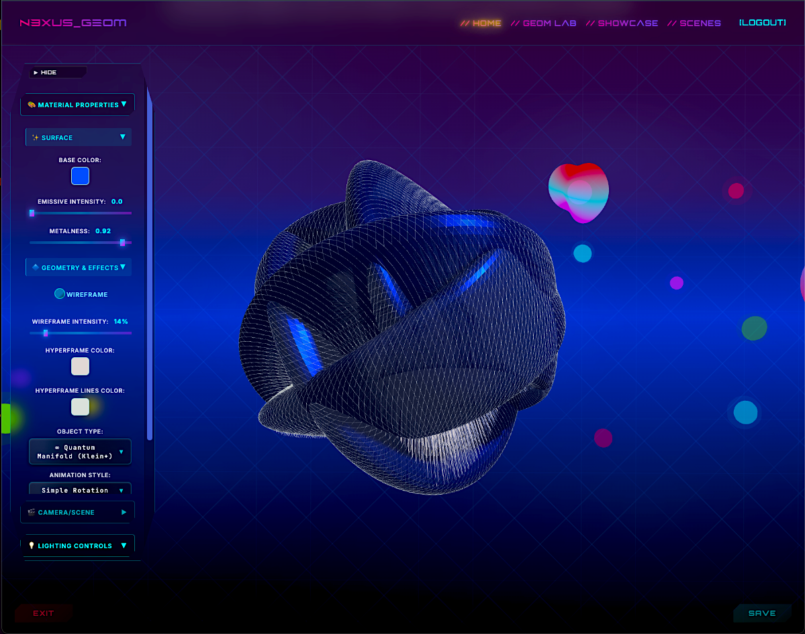
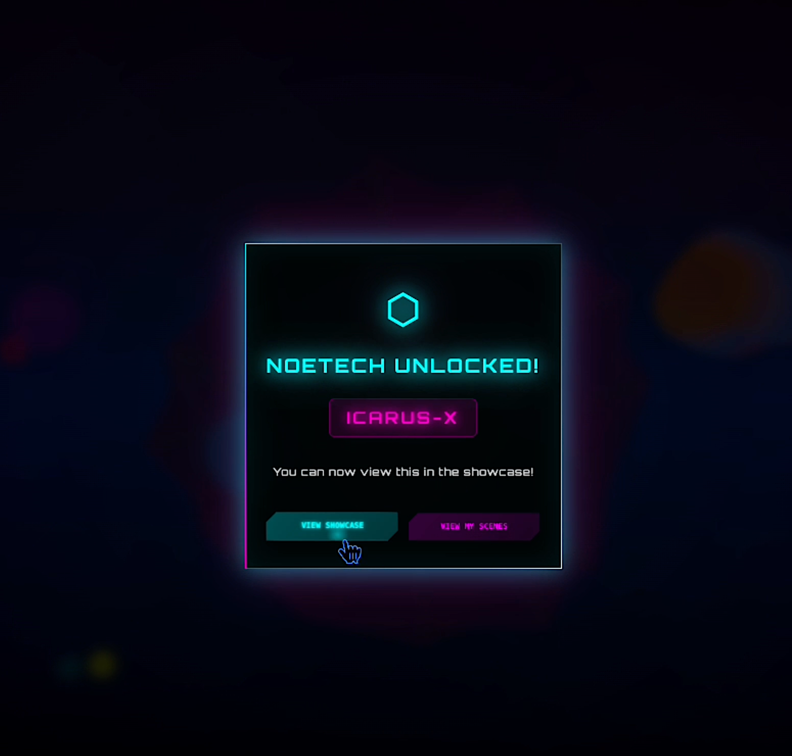
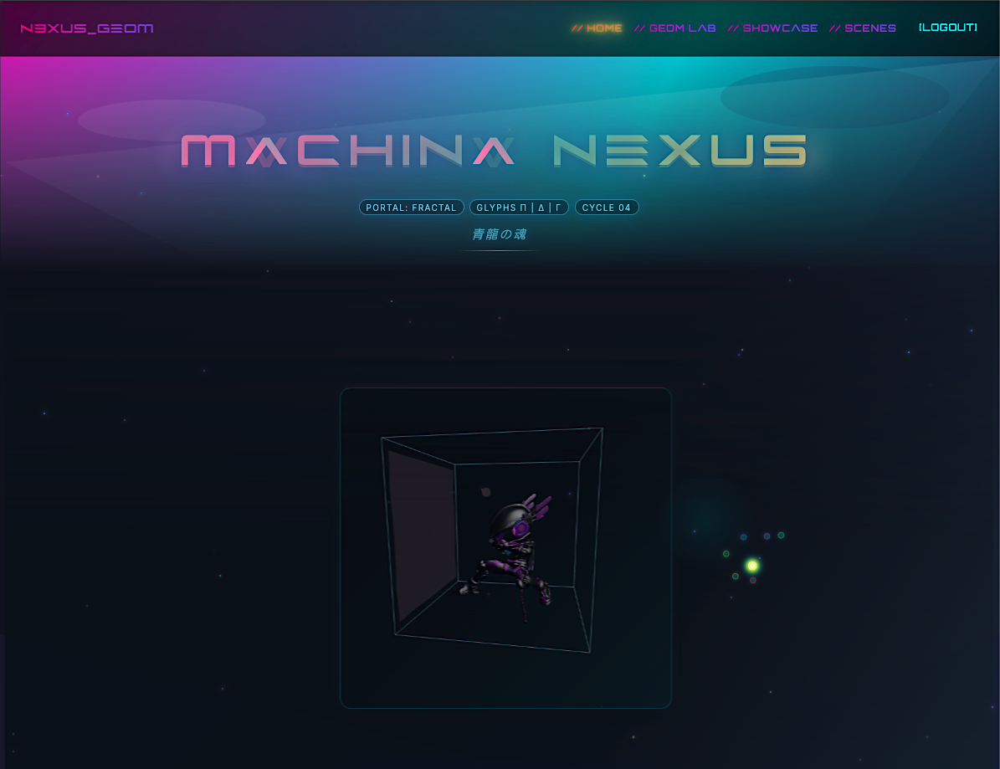
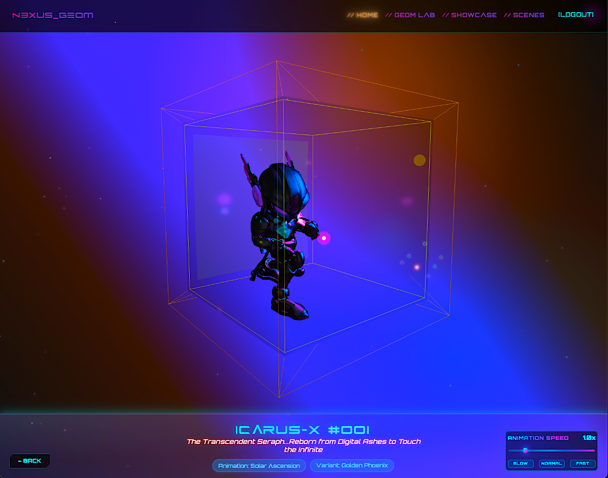
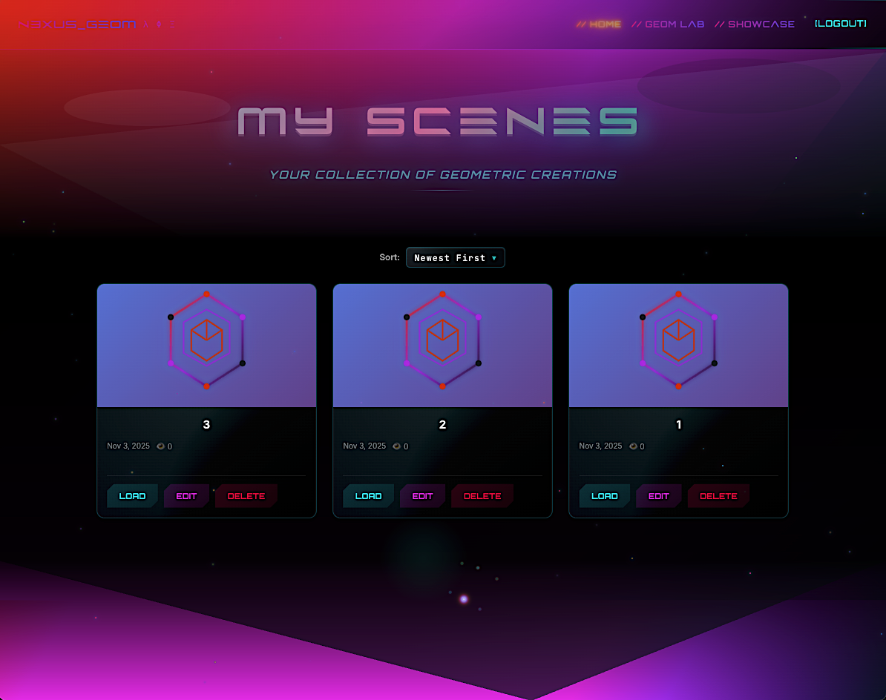
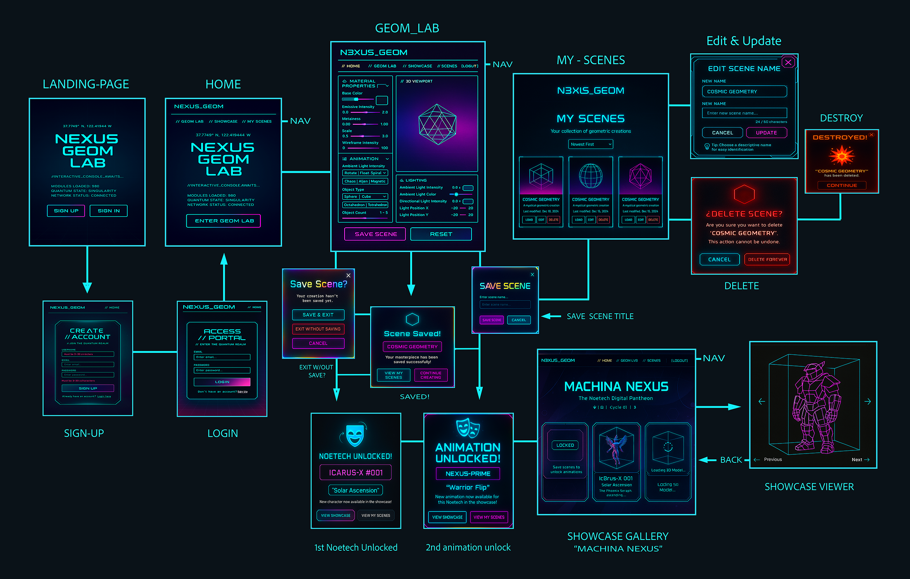

NEXUS GEOM LAB
Gamified 4D Mathematics & Character Orchestration — "Make 4D geometry fun to explore, not just educational."
Desktop Only — Requires mouse input and GPU acceleration for the full 3D experience.










About the Project
Nexus-Geom-Lab is an immersive, full-stack 3D platform for exploring hyperdimensional mathematics. By combining React Three Fiber with a gamified progression system, the application transforms abstract geometrical concepts into a rewarding interactive experience.
Technical Architecture
This project represents a significant refactoring achievement, moving from a monolithic 2,700-line component to a highly modular, hook-based architecture.
GPU-Offloaded Rendering & Performance
Zero-Bottleneck Architecture: The system offloads
all 3D computation to the client's GPU, utilizing
mergeGeometries() and InstancedMesh to
minimize draw calls and maintain a consistent 60fps during complex
transformations.
Resource Management: Strict disposal patterns for geometries and materials prevent GPU memory leaks during high-frequency scene switches.
Advanced React Design Patterns
Custom Hook Orchestration: The 3D engine breaks
down into domain-specific hooks (useAnimationLoop,
useObjectManager, useMaterialUpdates),
allowing for isolated testing and development.
Props Consolidation: Replaced massive 42-prop drilling patterns with a streamlined object-based API, reducing JSX boilerplate by 70%.
Audio-Reactive Geometry (FFT Analysis)
Web Audio API Integration: A real-time Fast Fourier Transform (FFT) analyzer maps audio frequency data to geometry transformations. Bass (20-250 Hz) drives scale pulsing and Z-position, while mid frequencies drive rotational momentum.
Project Type
Full-Stack 3D Application
Tech Stack
React Three Fiber, Three.js, Express, MongoDB, JWT, Web Audio API, Blender, Mixamo
Role
System Architect & 3D Engineer
Status
Active Development
Core Systems
The Geometry Factory
A modular factory pattern that procedurally generates 24 advanced geometries, including 4D polytopes and quantum manifolds. The system supports real-time manipulation of metalness, emissive intensity, and wireframe blending without rebuilding the scene.
Progressive Unlock Engine
The backend (Express/MongoDB) tracks user interaction thresholds to trigger the character unlock system.
Pipeline: Blender → Mixamo → FBX → React Three Fiber
Result: A gamified feedback loop where exploration directly rewards the user with originally rigged and animated 3D characters (Nexus Prime, Vectra, Icarus-X).
Scene Persistence & CRUD
Full-stack implementation allowing users to save, load, and "transmute" custom 3D environments.
Security: JWT-based authentication with bcrypt hashing.
UX: Integrated navigation blocking to prevent data loss on unsaved changes.
93% Code Reduction
Refactored 2,700 lines into 199 through modular hooks
134 State Variables
Managing real-time synchronized interactions across UI and 3D canvas
39 Passing Tests
Jest coverage across geometry pipeline and state transition utilities
Key Capabilities
4D Polytopes
Visualize tesseracts, 24-cells, and hypercubes projected into 3D space with real-time rotation controls.
Audio-Reactive
FFT analysis transforms sound into geometry—bass drives scale, mids control rotation, highs affect emissive glow.
Character Rewards
Unlock originally rigged 3D characters through exploration. Pipeline: Blender → Mixamo → React Three Fiber.
Scene Persistence
Save, load, and transmute custom environments with JWT-secured CRUD operations and data loss prevention.
GPU-First Design
InstancedMesh and mergeGeometries() offload computation to GPU, maintaining 60fps during complex transformations.
Modular Hooks
Domain-specific hooks (useAnimationLoop, useObjectManager) enable isolated testing and component reusability.
Future Vision
Motion Capture: Planned integration of Rokoko-recorded human movements for more nuanced character behavior.
Ray Tracing: Implementation of path-traced rendering for photorealistic materials.
Social Remixing: A public gallery system to clone and customize community-generated scenes.